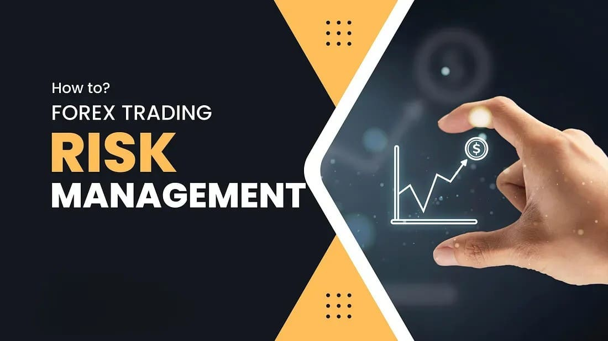

Forex Trading: Understanding Risk Management
Risk management is a crucial aspect of successful forex trading. In a market as volatile as forex, proper risk management can be the difference between success and failure. In this blog post, we’ll cover the basics of managing risk in forex trading and provide tips to help you protect your investments.
One of the most important principles of risk management is setting appropriate stop-loss orders. A stop-loss order helps limit your losses if the market moves against you. It's a pre-set point at which you automatically exit a trade to prevent further losses.
"Never risk more than you can afford to lose. Risk management is the foundation of long-term success in forex trading." – Senior Forex Trader at TradePro
Another key aspect of risk management is position sizing. Always ensure that the amount you're investing in any given trade is in line with your overall portfolio. Diversifying your trades across multiple currency pairs can also reduce your exposure to market fluctuations.
In conclusion, successful forex trading requires not only a strong understanding of the markets but also the discipline to manage risk effectively. Implementing a solid risk management strategy can help you navigate market volatility and improve your chances of long-term success.
← Back to Blogs